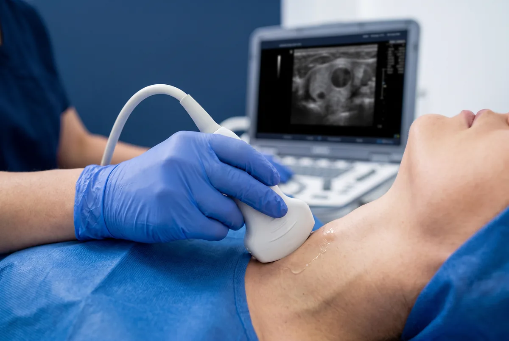

Dr. Marcelo Marquez Cruz · Mérida
Ultrasonido de Tiroides y Cuello
Sin ayuno. Cuello libre (sin collar). Ropa de dos piezas. Ver preparación.
El ultrasonido tiroideo de alta resolución es el estudio más preciso y accesible para evaluar la glándula tiroides. Permite detectar y caracterizar nódulos tiroideos, medir el volumen tiroideo en casos de bocio, identificar signos de tiroiditis de Hashimoto (la causa más común de hipotiroidismo en México), enfermedad de Graves (hipertiroidismo autoinmune) y evaluar los ganglios linfáticos del cuello. Se recomienda realizarlo ante cualquier nódulo palpable en el cuello, alteraciones en los niveles de TSH, T3 o T4, o antecedentes familiares de cáncer tiroideo.
Cada nódulo tiroideo se clasifica según el sistema TI-RADS (Thyroid Imaging Reporting and Data System), el estándar internacional que determina el riesgo de malignidad de un nódulo basado en sus características ecográficas: composición, ecogenicidad, forma, márgenes y calcificaciones. La clasificación va de TI-RADS 1 (tiroides normal) a TI-RADS 5 (alta sospecha de malignidad, >20% de riesgo). Esta clasificación determina si el nódulo requiere solo seguimiento o una Biopsia por Aspiración con Aguja Fina (BAAF) guiada por ultrasonido, que es el procedimiento de referencia para obtener células del nódulo y determinar si es benigno o maligno con mínima incomodidad para el paciente.
Además de la tiroides, el ultrasonido cervical completo evalúa las glándulas salivales (parótida y submaxilar), los ganglios linfáticos cervicales (importantes en el seguimiento de cáncer de cabeza y cuello) y las glándulas paratiroides en casos de hiperparatiroidismo. Es un estudio indispensable en el seguimiento de pacientes con hipotiroidismo, hipertiroidismo y en la vigilancia postoperatoria de pacientes tiroidectomizados.
Indicaciones para este estudio
¿Cuándo solicitar un ultrasonido de tiroides?
- Nódulo tiroideo palpable o detectado incidentalmente
- Bocio (tiroides agrandada) de cualquier causa
- Hipotiroidismo o hipertiroidismo en estudio
- Sospecha de tiroiditis de Hashimoto o enfermedad de Graves
- Seguimiento de nódulos tiroideos conocidos (TI-RADS 3 o superior)
- Guía para biopsia por aspiración con aguja fina (BAAF)
- Vigilancia post-tiroidectomía parcial o total
- Evaluación de glándulas paratiroides (hiperparatiroidismo)
- Adenopatías cervicales de causa desconocida
Preparación: No se requiere ayuno ni preparación especial. Acudir con cuello descubierto (sin collares ni bufandas). Traer resultados previos de TSH, T4 libre y estudios de imagen anteriores si los tiene.
- Ultrasonido tiroideo alta resolución
- Ultrasonido de cuello (tiroides + ganglios)
- Ecografía cervical completa
- Seguimiento de nódulos tiroideos

También puede interesarte
Preguntas frecuentes
¿Qué es TI-RADS?
¿Qué es la BAAF guiada por ultrasonido?
¿Cuándo hacerse ultrasonido de tiroides?
¿Requiere preparación?
¿También evalúa ganglios del cuello?
Más respuestas en preguntas frecuentes.
Contacto
Agenda tu ultrasonido
Atención en Ultrasonido Biogamma, Mérida, Yucatán. Diagnóstico preciso.